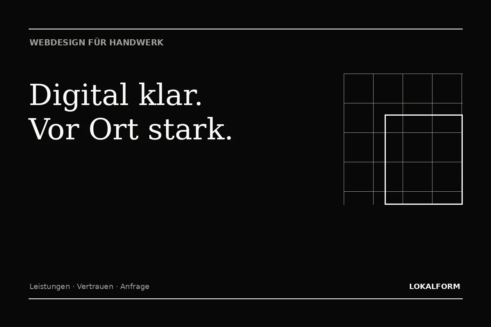

Leistungen werden getrennt, verständlich und mit klarer Suchintention dargestellt.
Für Betriebe mit echter Leistung
Webdesign für Handwerker
Eine gute Handwerker-Website zeigt nicht nur, was Sie anbieten. Sie macht Qualität verständlich, schafft Vertrauen und führt Interessenten direkt zur Anfrage.

Worauf es ankommt
Eine Handwerker-Website muss zuerst Vertrauen schaffen.
Wer nach einem Handwerksbetrieb sucht, will selten lange recherchieren. Entscheidend sind ein klarer Leistungsüberblick, ein nachvollziehbares Einsatzgebiet, echte Kontaktmöglichkeiten und ein Auftritt, der zur Qualität des Betriebs passt. Lokalform baut Websites für Handwerker deshalb nicht wie einen digitalen Prospekt, sondern wie einen strukturierten Weg von der Suche zur Anfrage.
Die wichtigsten Leistungen bekommen eigene, verständliche Bereiche. Auf Mobilgeräten bleiben Telefonnummer, Anfrage und Termin leicht erreichbar. Bilder werden nicht nur dekorativ eingesetzt, sondern erklären Arbeit, Qualität und Spezialisierung. Für Suchmaschinen entsteht gleichzeitig eine saubere Informationsarchitektur, damit einzelne Leistungen eindeutig verstanden werden können.
Arbeitsweise, Qualität, Referenzbilder und nachvollziehbare Kontaktwege stärken die Entscheidung.
Telefon, Formular oder Termin werden dort angeboten, wo Interessenten bereit für den nächsten Schritt sind.
Typische Inhalte
Von Dach bis Ausbau: Struktur statt Leistungsliste.
Ein Betrieb mit mehreren Gewerken braucht nicht automatisch eine riesige Website. Wichtiger ist, dass jede Kernleistung genug Raum bekommt. So kann eine Dachdeckerei beispielsweise Dachsanierung, Reparaturen, Flachdach und Photovoltaik getrennt erklären, während ein Innenausbauer andere Suchwege benötigt. Die Seitenstruktur richtet sich deshalb am tatsächlichen Angebot und an echten Kundenfragen aus.
| Bereich | Zweck | SEO-Nutzen |
|---|---|---|
| Startseite | Positionierung, Vertrauen, wichtigste Leistungen | Marke und Hauptthema klar einordnen |
| Leistungsseiten | Einzelne Leistungen ausführlich erklären | Gezielte Suchintentionen abdecken |
| Projekt-/Arbeitsbeispiele | Qualität sichtbar machen | Einzigartige Inhalte und Bildsignale |
| Kontakt / Termin | Anfragehürde senken | Klare Nutzerführung und Conversion |
Ablauf
Vier Schritte bis zum klaren Auftritt.
01
Leistungen ordnen
Wir trennen Kernleistungen, Zusatzleistungen und regionale Relevanz.
02
Inhalte planen
Für jede Seite werden Aufgabe, Nutzerfrage und nächster Schritt definiert.
03
Individuell gestalten
Typografie, Bildsprache und Bewegung passen zum Betrieb statt zu einem Template.
04
Technisch starten
Mobile Umsetzung, Indexierung, interne Links und Performance werden von Anfang an berücksichtigt.
Mehr dazu
Nächster Schritt
Aus einer Idee wird eine klare Website.
20 Minuten reichen für eine erste Richtung: Ziel, Umfang, Seitenstruktur und sinnvolle Funktionen.
Termin auswählen ↗